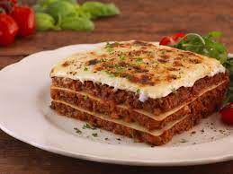

Homepage
Lasagne

Description
This is a classic dish everyone should have
in their repertoire. As a home cook or professional
chef, knowing how to make a good lasagne is invaluable.
This recipe is both delicious, and easy to follow!
It features ingredients most will have in their pantry,
which makes it useful even for a regular Tuesday night.
Ingredients
- 1 Large Onion
- 500g Ground Beef
- 1 Can Tomato Mix
- 2 Sachets Tomato Paste
- 2 tsp Table Salt
- 2 tsp Mince Spice
- 2 tsp Mixed Herbs
- 250g Lasagne Sheets
- 750 ml Milk
- 2 Tbsp Butter
- 250g Mozzarella
- 250g Parmesan
- 2 Tbsp Flour
Steps
- Preheat oven to 180 degrees Celsius
- Fry onion, herbs, spice and salt in a large pan.
- When onions are golden brown, add mince to the pan.
- When the mince is cooked, add the tinned tomato.
- Simmer for 15 minutes
- Add tomato paste.
- Melt butter in a saucepan.
- Add flour to the butter to form a paste.
- Add milk.
- Let boil until it thickens.
- Add half the mozzarella and half the parmesan to the sauce.
- Once melted, set aside.
- In a large baking dish, put a layer of cheese sauce, topped with a layer of mince and add a layer of lasagne sheet.
- Repeat layering until the dish is full, ending with a layer of mince.
- Bake in the oven until pasta is soft.
- Add the remainder of the cheese to the top of the dish.
- Bake until cheese is golden brown.